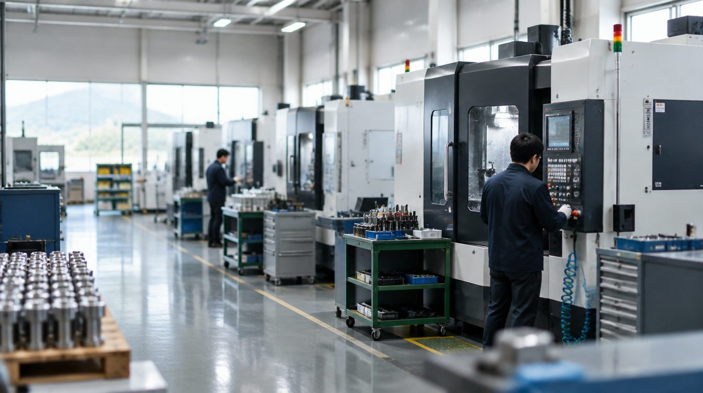
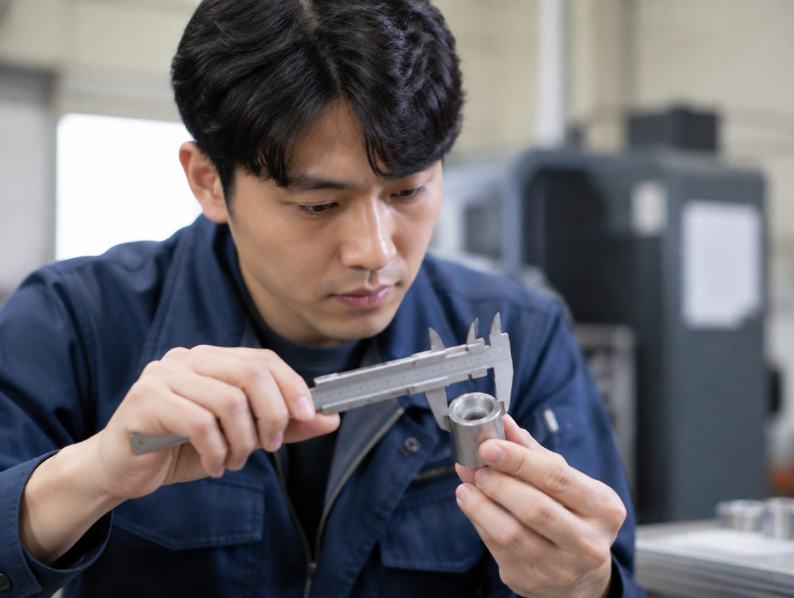

소재와 가공 방식
소재 등급, 도면 요구, 후처리 유무를 기준으로 실제 가능한 가공 범위를 확인합니다.
도면과 소재, 수량과 일정.
제작 가능 여부를 검토할 수 있도록 필요한 조건부터 맞춥니다.

실제 장비·가공 한계·인증을 임의로 표시하지 않습니다. 아래는 기업 정보를 구성할 항목입니다.
소재 등급, 도면 요구, 후처리 유무를 기준으로 실제 가능한 가공 범위를 확인합니다.
핵심 관리 치수와 필요한 측정·검사 조건을 협의합니다.
시제품인지 양산인지, 향후 반복 발주가 예상되는지 구분합니다.
희망 일정과 포장·납품·검사 성적서 등 필요한 인계 자료를 정리합니다.
실제 도면 파일을 올리지 않는 준비 확인 UI입니다. 기밀 도면·고객 정보는 승인된 전달 경로로만 공유해야 합니다.

도면과 사양의 기준을 맞춥니다.
실제 설비와 가공 조건을 대조합니다.
납기와 검사 범위를 조율합니다.
결과물과 필요한 자료를 확인합니다.